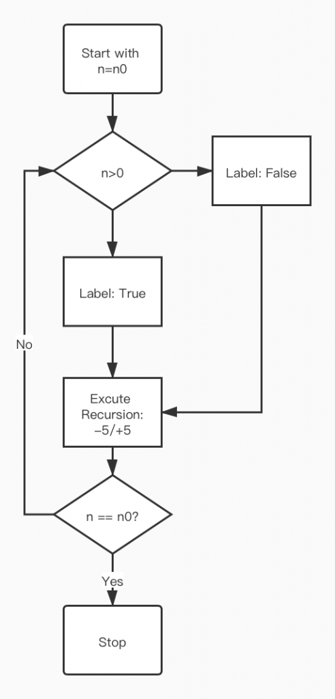

Original comic from Safely Endangered. No idea who created this variant of the meme.
1) Tip/Trick Explanation: Coin toss - reusing and recursive problem solving
What's recursion? The best illustration I think is the Russian doll. Once you get a Russian doll, you see just one figurine. But you can remove the top half of the first doll, and then you get another, slightly smaller, Russian doll! You can keep removing that smaller dolls' top halves, and you will keep finding smaller dolls inside it. If there are infinite ($latex N \rightarrow \infty$) smaller Russian dolls, the first one containing N Russian dolls can be treated in exactly the same way as the second one containing (N-1) Russian dolls, just with some scaling. That's how the recursive algorithm works! It is to solve a problem by solving a smaller instance of the same problem. In our textbook, the author takes the example of a coin game where two players take turns tossing a coin; whoever firstly tosses heads wins. We can assume that the probability of the first player’s winning is $latex p$. Therefore, if the first player loses in his first turn and now it’s the second player’s turn, then what the second player faces currently is exactly the same as what the first player faces when he takes the first turn, so now the probability of winning for the second player should also be $latex p$. Note that only after the first player failed in his first turn, will this condition occur. So the total probability of the second player’s winning is p/2. In this example, the first player’s winning is the Russian Doll! The textbook also tells a joke of John von Neumann to show his advanced mathematical skill using the recursive thinking. When I searched for recursive back-of-the-envelope problems, I realized that recursion is one of the central ideas of computer science. Recursive thinking of course can help us simplify the calculation. For programming, it can help avoid the loop, which could cut down the lines of code and improve computational efficiency. So I chose a coding problem to solve this week.2) Example Back of the envelope calculation:
a) Question:Print a pattern without any loop.
Given a number n, print following a pattern without using any loop. For example, n is asked to be first reduced by 5, and then one by one until it reach a negative or 0. After it reaches 0 or negative, it should be added 5 until it reaches n.Examples:
Input: n = 16
Output: 16, 11, 6, 1, -4, 1, 6, 11, 16
Input: n = 10
Output: 10, 5, 0, 5, 10
b) Solution Strategy:
The first thing coming up in my mind is to write a simple but redundant loop, but I was told to apply recursive thinking to this question. Let's see if it will be more beautiful than the loop. Firstly, we need to find the Russian doll, which should be "5 less/more than the former figure". Let's take it as our major function and keep doing it. A potential mudding part is that the condition changes after the number reaching a negative or 0. We could label it using an index. The flowchart is attached at the right, and below is my code in Python:
The Flowchart.
def recur(n0,t,index):
# where n0 is the initial (the first) number;
# n is the one we should calculate on;
# t is the step length;
# index = True if n>0; index = False if n<=0.
print(n)
if index and n <=n0:
n = n - t
if n <= 0:
index = False
return recur(n0,n,t,index)
elif n<n0:
n = n + t
return recur(n0,n,t,index)
elif n == n0:
return
c) Quantitative Estimates:
For this part, I just test my code using different numbers:Input: recur(16,16,5,True)
Output:16 11 6 1 -4 1 6 11 16
Input: recur(25,25,7,True)
Output:25 18 11 4 -3 4 11 18 25
Input:recur(-2,-2,3,False)
Output: -2
Input:recur(2,2,6,True)
Output: 2 -4 2
The code did a great job!
d) Conclusions & Reflection:
Compared to loop, recursion is more simple and beautiful. I think loop is like to construct a building carefully, while recursion is like a cheater who grabs a small but key subproblem and deals with it once and for all. The trick is to find the Russian Doll in the problem!ACKNOWLEDGEMENT:
This post has made use of the practice examples on GeeksForGeeks, a wonderful website for practicing coding!3) Back-up Problem:
In case my coding problem can not be counted as the back-of-the-envelope calculation (It seems no calculation is included in my problem...), I also picked the John von Neumann's problem(Problem 2.7 on Page 34).a) Question:
If the fly starts when the trains are 60 miles apart, each train travels at 20 miles per hour, and the fly travels at 30 miles per hour, how far does the fly travel, in total, before meeting its maker when the trains collide? (Apologies that physics problems are often so violent.)
Find the insightful and the infinite-series solution to the problem of the fly and the approaching trains (Section 2.2). Check that they give the same answer for the distance that the fly travels!
b) Solution Strategy & Quantitative Estimates:
b.1 Insightful solutions:
The fly keeps flying until the trains collide, so we can calculate the time and multiply it by fly's speed. $latex x_{fly} = v_{fly}\times t = 30 \times \frac{30}{20} = 45 miles$b.2 Infinite-series
c) Conclusions & Reflection:

Thank-you-for-reading-it bonus! Recursive Doge. Click for gif! Credit: @ PuppyDontCare https://imgur.com/gallery/lYEK8Cd[/caption]